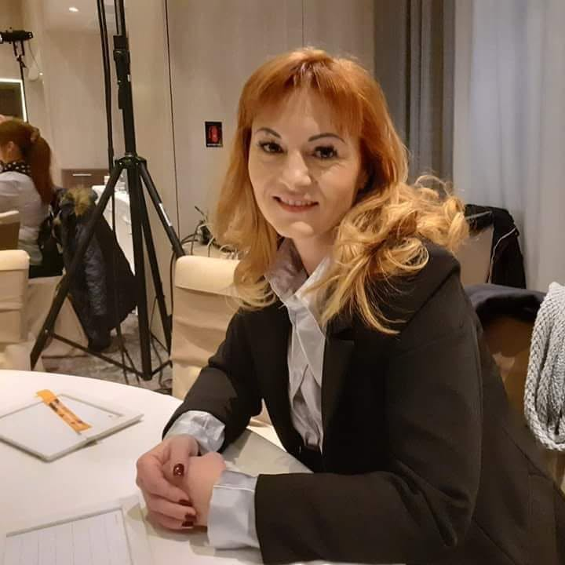

Ce am învățat din groapă
Patru copii au săpat aceeași groapă unsprezece săptămâni. Nimeni nu a stabilit-o ca proiect. Iată ce a ieșit din ea, în afară de vreo tonă de lut.
Târgoviște · din 2009
Un after school pe strada Preot Toma Georgescu, în Târgoviște. Două săli, o curte mare, patruzeci și unu de copii și o regulă bătută în cuie: noroiul are voie înăuntru până la banca de cizme.
Capitolul unu
Publicat pentru că părinții tot întrebau și pentru că o școală care nu poate spune ce se întâmplă la 10:45 probabil nici nu știe.
Chiar acum
—
7:30
Se deschid ușile
Pături, cărți și capătul liniștit al sălii. Nimeni nu e întâmpinat cu voce tare.
8:15
Micul dejun
Terci, fructe și ce a mai ieșit din cuptor. Copiii se servesc singuri.
9:00
Cercul de dimineață
Prezența, vremea și cine are noutăți. Opt minute, rareori nouă.
9:30
Investigații
Blocul lung. Lut, apă, construcții, litere, povești — nouăzeci de minute, netăiate.
10:45
Afară
În fiecare zi. Hainele de ploaie sunt ale noastre, deci vremea nu e un motiv.
12:15
Prânzul
O masă lungă, servită ca acasă. Ana îl gătește în aceeași dimineață.
12:45
Odihnă
Dormi dacă ai nevoie. Povești și o cameră în penumbră dacă nu.
14:30
Gustare
Pentru ca stim ca mintea funtioneaza mai bine pe stomacul plin.
15:15
Se deschide after school-ul
Mergem pe jos după copii la Marlow, Beckett și Sfântul Aldate.
16:00
Cluburi
Tâmplărie, cor, șah, grădinărit. Alese de copii la începutul fiecărui trimestru.
17:00
Ora liniștită
Teme sub lampa lungă, apoi Hollis citește cu voce tare — prost, intenționat.
18:00
Se închid ușile
Cizmele încălțate, ghiozdanele verificate, un lucru rămas mereu în urmă.
Capitolul doi
Anul școlar, vara, atelierele de peste săptămână și ieșirile din oraș. Se pot lua separat sau împreună — cei mai mulți copii rămân cu noi de la septembrie până la finalul lui august.
01
6 – 11 ani · septembrie – iunie
Venim după copii pe jos, de la școlile din apropiere. Mâncăm cald, facem temele la masa lungă cu un adult care stă lângă tine dar nu le face în locul tău, și abia după aceea începe partea bună a după-amiezii.

02
5 – 11 ani · iulie – august
Când se termină școala, programul nu se oprește — se mută afară. Săptămâni cu temă, dimineți lungi în curte, gătit, construit și o zi pe săptămână petrecută în afara orașului.

03
5 – 11 ani · tot anul
Tâmplărie, gătit, robotică, teatru, pictură și grădinărit. Copiii aleg la începutul fiecărui trimestru, iar grupele rămân mici pentru că altfel nu are cine să țină ferăstrăul de celălalt capăt.

04
6 – 11 ani · lunar și săptămânal vara
O ieșire pe lună în timpul anului școlar și una pe săptămână în vacanța de vară. Muzee, ateliere meșteșugărești, ferme și pădurea de la marginea orașului. Plecăm dimineața și ne întoarcem înainte de ora de plecare acasă.

Galerie
Dimineața în curte
Primele ore, înainte de blocul lung de investigații.
Blocul de investigații
Nouăzeci de minute fără întreruperi, exact cum arată.
După-amiaza la after school
Atelierele, temele și ora în care nu se plănuiește nimic.
Ateliere și excursii
Din atelierele de peste săptămână și din ieșirile din oraș.
Copiii nu au nevoie să fie distrați. Au nevoie să li se dea ceva greu în grijă și apoi să fie lăsați singuri cu acel ceva destul cât să-l termine.
Nimic care merită făcut nu se face în douăzeci de minute. Blocul de dimineață ține nouăzeci și nu tăiem din el pentru nimic mai mic decât o alarmă de incendiu.
Nu există variantă de zi în care curtea se anulează. Ținem patruzeci de rânduri de haine impermeabile în hol, ca vremea să nu aibă niciodată votul decisiv.
Cuțite în bucătărie, ferăstraie la banc, chibrituri la vatră. Predate cum trebuie, supravegheate îndeaproape și niciodată ascunse sub preș.
Fără fluiere, fără numărători inverse, fără cântat la copii ca să strângă jucăriile. Dacă o sală e gălăgioasă, ne uităm mai întâi la adulții din ea.
Cam patruzeci de minute pe zi sunt neplanificate, intenționat. E constant partea despre care întreabă părinții și constant partea în care începe cea mai bună treabă.
Dacă cel mic a avut o zi proastă, a mușcat pe cineva sau a mutat pietriș patru ore dintr-o găleată în alta, exact asta va scrie în bilet.
Capitolul trei
Vechimea medie e de șapte ani. În domeniul ăsta e ori remarcabil, ori suspect, și noi credem că e primul.

Nicoleta
Director
A pornit Arcobaleno în 2009, după unsprezece ani în săli de inspirație Reggio. Ține albine pe zidul din spate.
Tomás Brandt
Coordonator Crâng
Cofondatorul nostru, care ne împărtășește viziunea și entuziasmul. El răspunde de Crâng.
Priya Raghunathan
Coordonatoare Cuib
Cincisprezece ani cu copii sub trei ani. Crede în podele mai degrabă decât în scaune și n-a ridicat niciodată tonul.
Hollis Reyes
Coordonator after school
Fost bibliotecar pentru copii. Ține lectura cu voce tare de la 17:40 și adoră să învețe copiii lucruri care le folosesc toată viața.
Ana Hurtado
Bucătărie
Gătește totul de la zero pentru patruzeci și unu de oameni. Își pune sufletul în fiecare fel de mâncare.
Din jurnal
Patru copii au săpat aceeași groapă unsprezece săptămâni. Nimeni nu a stabilit-o ca proiect. Iată ce a ieșit din ea, în afară de vreo tonă de lut.
De ce stau patruzeci de minute neplanificate în mijlocul orarului nostru și ce se întâmplă de obicei în minutul treizeci și doi.
Ana despre de ce pâinea de miercuri e cea mai importantă lecție a săptămânii și de ce rețeta e plictisitoare intenționat.
Ce spun părinții
Am vizitat șase locuri în primăvara aceea. Arcobaleno a fost singurul unde nimeni nu făcuse ordine pentru noi.
Băiatul nostru a venit acasă cu o așchie și cu o căsuță de păsări și nu putea fi mai mândru de niciuna dintre ele.
Biletul de la finalul zilei are trei rânduri și îți spune exact ce s-a întâmplat. După creșa anterioară, doar asta a meritat mutarea.
Întrebări frecvente
Cele patru care revin cel mai des. Restul, împreună cu răspunsurile lungi, sunt pe pagina dedicată.
Nicoleta vă întâmpină la ușă la zece și vă plimbă prin ambele săli și prin curte în timp ce se folosesc. O să stați în drum, și e în regulă. Nu există prezentare, mapă sau slideshow. La final stați în bucătărie cu o cafea și întrebați tot ce vreți, cât durează.
Strict în ordinea datelor, cu o singură excepție: frații copiilor care sunt deja la noi intră primii. Nu percepem taxă pentru înscrierea pe listă și nu ținem locuri deoparte. Dacă vi se oferă un loc, aveți două săptămâni să vă hotărâți, iar un „nu” nu vă scoate de pe listă pentru mai târziu.
Totul se gătește aici, de către Ana: micul dejun la 8:15, prânzul la 12:15 și gustări la 14:30 și 15:45. Totul e inclus în taxă. Suntem un spațiu fără nuci și ținem de ani de zile meniuri fără lactoze, fără gluten și vegane în paralel cu meniul principal. Scrieți-ne în formular și discutăm serios înainte să începeți.
Ieșim afară. Ținem patruzeci de rânduri de haine impermeabile și vreo șaizeci de perechi de cizme în hol, în toate mărimile, ca nimeni să nu piardă curtea din lipsă de haină. Trimiteți un rând de haine de schimb și așteptați-vă să primiți o pungă vineri.
Veniți să vedeți
Veniți marți la ora zece, când e gălăgie și cineva plânge din cauza unei căciuli. Nicoleta vă plimbă patruzeci de minute și răspunde la tot. Nu există prezentare și nu există mapă.
Lista de așteptare — toamna 2026
Actualizat pe 14 iulie 2026. Ținem lista sinceră și nu păstrăm locuri pentru nimeni.